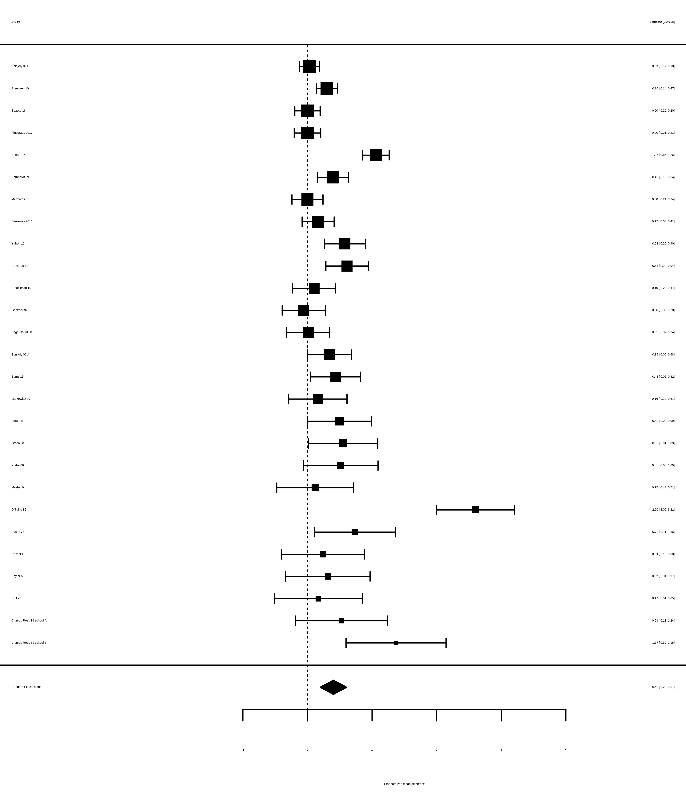
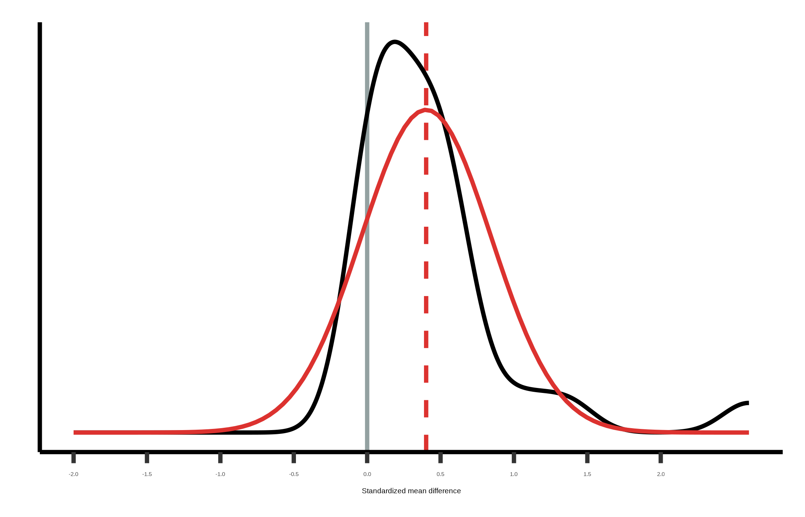
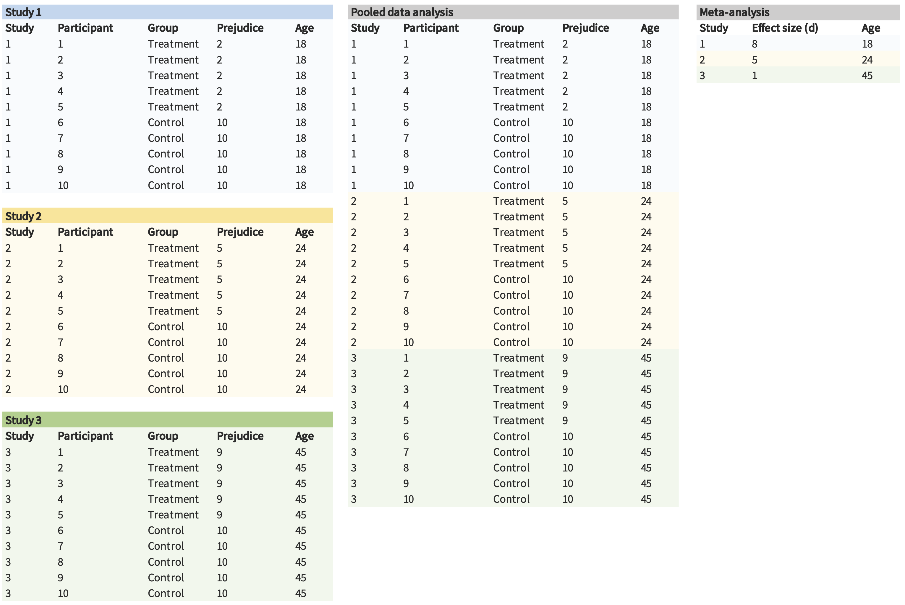
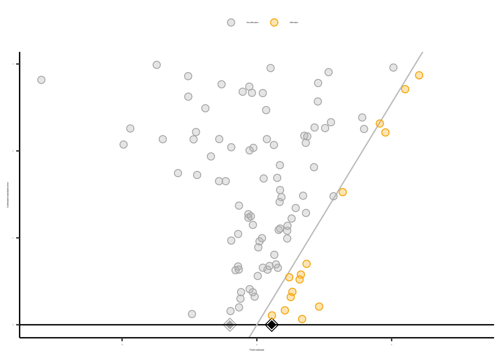
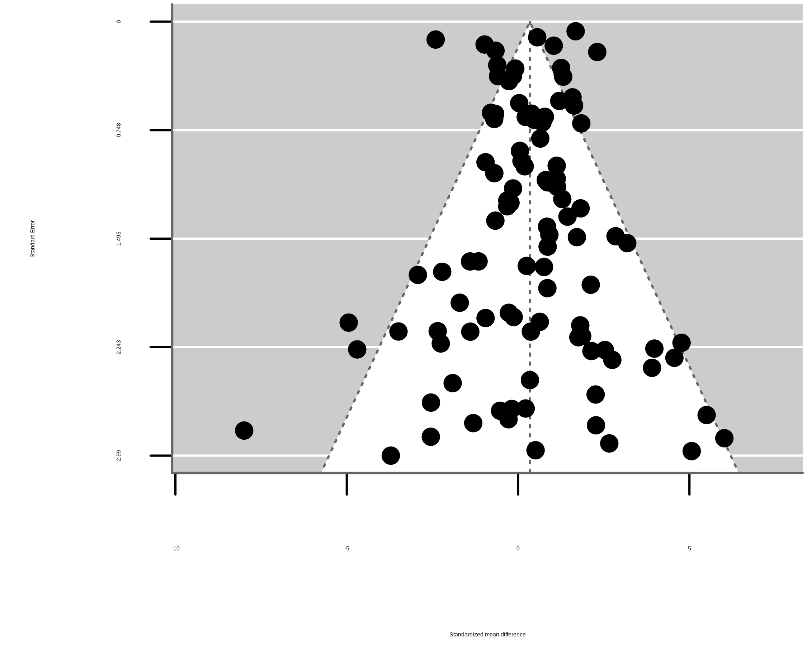
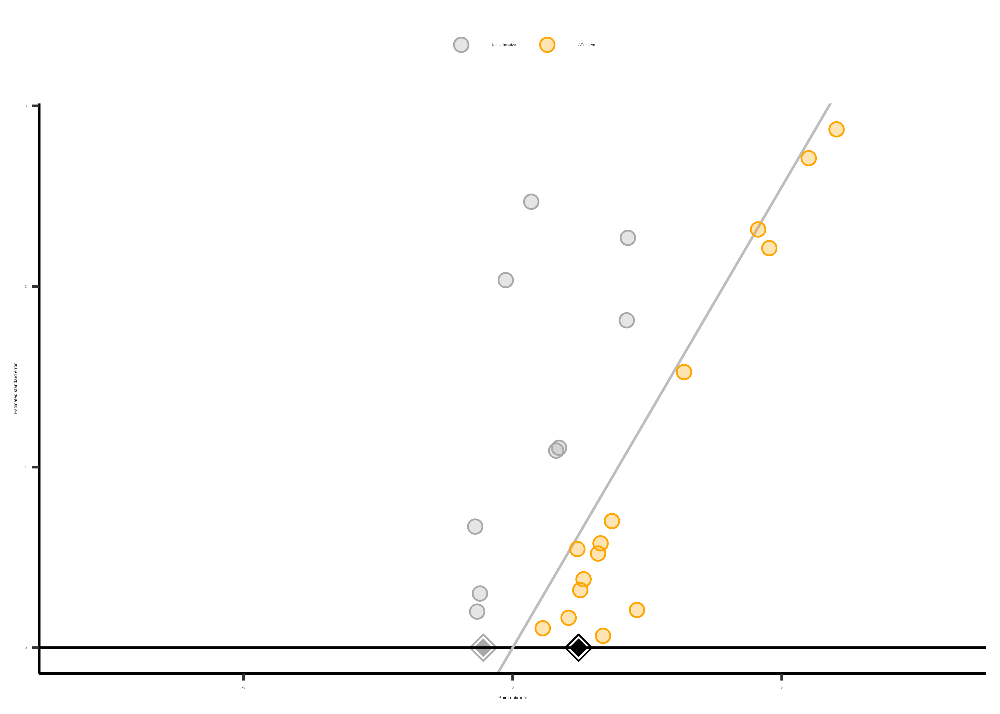

| name | pub_date | target | n_total | d | var_d |
|---|---|---|---|---|---|
| Boisjoly 06 B | 2006 | race | 1243 | 0.030 | 0.006 |
| Sorensen 10 | 2010 | race | 597 | 0.302 | 0.007 |
| Scacco 18 | 2018 | religion | 474 | 0.000 | 0.010 |
| Finseraas 2017 | 2017 | foreigners | 577 | 0.000 | 0.011 |
| Sheare 74 | 1974 | disability | 400 | 1.059 | 0.011 |
| Barnhardt 09 | 2009 | religion | 312 | 0.395 | 0.015 |
16 元分析
注记学习目标
- 讨论跨研究综合证据的好处
- 进行简单的 fixed-effects 或 random-effects meta-analysis
- 推理 within-study 和 across-study biases 在 meta-analysis 中的作用
贯穿本书，我们一直关注如何设计单个实验，使 测量精度 最大化并尽量减少 bias。但即使我们尽最大努力，在单个实验中得到精确、无偏的估计，一项研究也永远不可能是决定性的。参与者人口统计特征、刺激和实验方法上的变异，可能限制我们发现的 generalizability（可推广性）。此外，即使 well-powered 的单个研究也会有一定统计误差，限制其精度。跨研究综合证据，对于形成一种平衡且能恰当演化的整体证据观至关重要；它也有助于理解感兴趣效应中的变异来源。
严谨地综合证据，不只是把一个搜索词输入 Google Scholar，下载几篇看起来相关或有趣的文章，然后定性总结你对这些研究的印象。虽然这种 ad hoc 方法可能是做 literature review 的必要第一步 (Grant 和 Booth 2009)，但它并不系统，也不能给出某个特定效应的定量总结。此外，它也不会告诉你文献中可能存在的 biases，例如偏向发表正向效应的 bias。
为处理这些问题，一种更系统、定量的文献综述通常信息量更大。本章关注一种特定类型的定量综述，称为 meta-analysis： 一种把不同研究的 effect sizes 合并起来的方法。（如果你需要复习 effect size，见 章 5，那里介绍了这个概念。）1 我们在 Experimentology 中加入 meta-analysis 这一章，是因为我们相信它是一个重要工具，能让实验研究者关注 测量精度 和 bias reduction（减少偏差），也就是本书两个关键主题。
1 我们主要会使用 Cohen’s \(d\)， 也就是标准化均值差，我们在 章 5 中介绍过。Effect size 有许多其他种类，但这里关注 \(d\)，因为它很常见，而且在本书前面介绍过的统计工具语境中容易推理。
通过合并多个研究的信息，meta-analysis 往往能比任何单个研究更精确地估计 effect size。此外，meta-analysis 也允许研究者考察某个效应在不同研究之间变化到什么程度。如果一个效应确实跨研究变化，meta-analysis 还可以用于检验某些研究特征是否系统性地产生不同结果（例如，某个效应在特定 populations 中是否更大）。
注记案例研究
酒店住客重复使用毛巾
想象你住在酒店里，刚洗完澡。你会把毛巾扔在地上，还是重新挂起来？在一项被广泛引用的关于社会规范力量的研究中，Goldstein, Cialdini, 和 Griskevicius (2008) 操纵了鼓励住客重复使用毛巾的标语，是强调环境影响（例如“帮助减少用水”），还是强调社会规范（例如“大多数住客会重复使用毛巾”）。在两项研究中，他们发现，收到社会规范信息后，住客明显更可能重复使用毛巾（Study 1: odds ratio [OR] \(= 1.46\), 95% CI \([1.00, 2.16]\), \(p = 0.05\); Study 2: OR \(= 1.35\), 95% CI \([1.04, 1.77]\), \(p = 0.03\)）。
然而，其他研究者随后做的五项研究没有发现显著证据表明社会规范信息会增加毛巾重复使用。（ORs 范围从 \(0.22\) 到 \(1.34\)，且没有任何与假设一致的 \(p\)-value 小于 \(0.05\)。）这让许多研究者怀疑是否根本不存在效应。为了考察这个问题，Scheibehenne, Jamil, 和 Wagenmakers (2016) 通过 meta-analysis 对这些研究中的证据进行统计合并。这个 meta-analysis 表明，平均而言，使用社会规范信息确实显著增加了酒店毛巾重复使用（OR \(= 1.26\), 95% CI \([1.07, 1.46]\), \(p < 0.005\)）。这个 case study 展示了 meta-analysis 的一个重要优势：通过 pooling 多项研究的证据，meta-analysis 能产生比任何单项研究更有力的 insight。我们还会看到，meta-analysis 如何用于评估效应在不同研究之间的变异性。
Meta-analysis 经常教给我们一些东西，而这些东西是我们随便读一堆文章时无法直觉把握的。在上面的 case study 中，仅仅阅读单个研究，可能会让人以为社会规范信息不会增加酒店毛巾重复使用。但 meta-analysis 表明，平均效应是有益的，尽管 effect sizes 在不同研究之间可能存在 substantial variation。2
2 考虑到全球每年有数十亿次酒店预订，即使是一个小效应，也可能带来相当大的环境影响！
16.1 证据综合的基础
在探索如何进行 meta-analysis 的细节时，我们会转向另一个贯穿全章的例子：一项研究 intergroup relations 中 “contact hypothesis” 的 meta-analysis。
根据 contact hypothesis，针对 minority groups 成员的 prejudice 可以通过 intergroup contact interventions 减少；在这种干预中，majority 和 minority groups 成员一起合作追求共同目标 (Allport, Clark, 和 Pettigrew 1954)。为了汇总 contact hypothesis 的证据，Paluck, Green, 和 Green (2019) 对检验 randomized intergroup contact interventions 对长期 prejudice-related outcomes 影响的研究进行了 meta-analysis。
Paluck, Green, 和 Green (2019) 使用系统性文献搜索，寻找所有检验这些效应的论文，然后从每篇论文中提取 effect size estimates。3 由于不是每篇论文都会报告 standardized effect sizes，甚至不一定为每组报告均值和标准差，这个过程常常需要从图、表和统计检验中抓取信息，尝试重构 effect sizes。4
3 本书不会介绍如何进行系统性文献搜索和提取 effect sizes，但如果你计划做 meta-analysis 或其他 evidence synthesis，这些主题非常关键。我们的经验是，从报告标准不一致的论文中提取 effect sizes 可能尤其棘手，因此向有 meta-analysis 经验的人请教会很有帮助。
4 例如，如果 outcome variable 是 continuous，即使不能访问原始数据，我们也可以根据论文报告的组均值和标准差估计 Cohen’s \(d\)。
按照 meta-analysis 的 best practices（那里几乎从来不用担心隐私问题），Paluck, Green, 和 Green (2019) 公开共享了他们的数据。前几行显示在 表 16.1。我们会在全章把这些数据作为贯穿例子。
正如我们在本书中反复看到的，在分析前后可视化数据，有助于 benchmark 并检查我们对正式统计结果的直觉。在 meta-analysis 中，绘制 effect sizes 的一种常见方式是 forest plot，它描绘单个研究的估计值和 confidence intervals。在 图 16.1 中的 forest plot 里，5 较大的方块对应更精确的研究；注意它们的 confidence intervals 比不那么精确的研究窄得多。
5 暂时可以忽略最后一行 “RE Model”；我们稍后会回到这里。

注记代码
本章使用很棒的 metafor package (Viechtbauer 2010)。使用这个 package 时，你必须先拟合 meta-analytic model。但一旦拟合了模型 mod，只需调用 forest(mod) 就能创建类似上面的图。
16.1.1 如何不应该综合证据
许多人在 evidence synthesis 中的第一反应，是数一数有多少研究支持、多少研究不支持被考察的假设。这个技术通常相当于计算有多少研究有 “significant” \(p\)-values，因为不管好坏，“significance” 在很大程度上驱动了研究者报告的 take-home conclusions (McShane 和 Gal 2017; Nelson, Rosenthal, 和 Rosnow 1986)。在 meta-analysis 中，我们把这种计算 significant \(p\)-values 数量的做法称为 vote-counting (Borenstein 等 2021)。例如，在 Paluck, Green, 和 Green (2019) 的 meta-analysis 中，几乎所有研究都有正的 effect size，但 12 项研究中只有 27 项显著。因此，基于这种 vote-count，我们会得到大多数研究不支持 contact hypothesis 的印象。
许多定性 literature reviews 使用这种 vote-counting 方法，尽管通常并不明说。尽管它很直观，vote-counting 可能非常误导，因为它只用二分化的 \(p\)-values 来刻画证据，同时完全忽略 effect sizes。在 章 3 中，我们看到，在考虑单项研究时，迷恋 statistical significance 会如何误导我们。考虑多项研究时，这些问题同样适用。
例如，小研究可能因为 power 有限而持续产生 nonsignificant effects。但当许多这类研究在 meta-analysis 中合并起来，meta-analysis 可能会提供关于 positive average effect 的强证据。反过来，许多研究可能有 statistically significant effects，但如果它们的 effect sizes 很小，那么 meta-analysis 可能表明 average effect size 小到没有实际意义。在这些情况下，基于 statistical significance 的 vote-counting 会让我们严重误入歧途 (Borenstein 等 2021)。为了避免这些陷阱，meta-analysis 会合并每项研究的 effect size estimates（而不只是它们的 \(p\)-values），并以有原则的方式加权。
16.1.2 Fixed-effects meta-analysis（固定效应元分析）
如果 vote-counting 是坏主意，那么我们该如何合并跨研究结果？另一种直观方法也许是平均每项研究的 effect sizes。例如，在 Paluck et al. 的 meta-analysis 中，各研究 effect size estimates 的均值是 \(0.44\)。这种平均方法朝正确方向迈了一步，但有一个重要局限：平均 effect size estimates 会给每项研究相同权重。一个小研究 (例如 Clunies-Ross 和 O’Meara 1989，\(N = 30\)) 对 mean effect size 的贡献，与一个大研究 (例如 Boisjoly 等 2006，\(N = 1,243\)) 一样大。较大研究比小研究提供更精确的 effect sizes 估计，所以给所有研究相同权重并不理想。相反，较大研究应在分析中承担更多权重。
为处理这个问题，fixed-effects meta-analysis 使用 weighted average 方法。更大、更精确的研究，在计算总体 effect size 时得到更高权重。具体来说，每项研究按其 variance 的倒数加权（也就是 squared standard error 的倒数）。这很合理，因为更大、更精确的研究有更小 variances，因此在分析中得到更高权重。
一般而言，fixed-effect pooled estimate 是： \[\widehat{\mu} = \frac{ \sum_{i=1}^k w_i \widehat{\theta}_i}{\sum_{i=1}^k w_i}\] 其中 \(k\) 是研究数量，\(\widehat{\theta}_i\) 是第 \(i^{\text{th}}\) 项研究的 point estimate，\(w_i = 1/\widehat{\sigma}^2_i\) 是研究 \(i\) 在分析中的权重（即其 variance 的倒数）。6
6 如果你好奇，fixed-effect \(\widehat{\mu}\) 的 standard error 是 \(\frac{1}{\sum_{i=1}^k w_i}\)。这个 standard error 可以用来构造 confidence interval 或 \(p\)-value，如 章 6 中所述。
使用 fixed-effects 公式，我们可以估计 Paluck et al. 的 meta-analysis 中的 overall effect size 是 standardized mean difference，\(\widehat{\mu} = 0.28\)；95% confidence interval \([0.23, 0.34]\)；\(p < 0.001\)。因为 Cohen’s \(d\) 是我们的 effect size index，这个估计表明 intergroup contact 使 prejudice 降低了 \(0.28\) 个标准差。
注记代码
在 metafor 中拟合 meta-analytic models 非常简单。例如，对于上面的 fixed-effects model，我们只是运行 rma() 函数，并指定想要 fixed-effects analysis。
fe_model <- rma(yi = d, vi = var_d, data = paluck, method = "FE")然后 summary(fe_model) 会给出拟合模型的相关信息。
16.1.3 Fixed-effects meta-analysis 的局限
Fixed-effect meta-analysis 的一个局限，是它假设 true effect size 是，嗯，固定的！换句话说，fixed-effect meta-analysis 假设存在一个所有研究都在估计的单一 effect size。这是一个很强的假设。很容易想象它会被违反。例如，想象 intergroup contact 在群体成功达成共同目标时降低 prejudice，但在群体失败时增加 prejudice。如果我们在这些条件下 meta-analyze 两项研究，其中一项 intergroup contact 大幅增加 prejudice，另一项 intergroup contact 大幅降低 prejudice，那么看起来 intergroup contact 的真实效应可能接近零，而实际上被 meta-analyzed 的两项研究都有大效应。
在 Paluck et al. 的 meta-analysis 中，各研究在多个方面不同，可能导致不同 true effects。例如，有些研究招募成人参与者，有些研究招募儿童。如果 intergroup contact 对成人和儿童的有效性不同，那么谈论单一（也就是 “fixed”）intergroup contact effect 就会误导人。相反，我们会说 intergroup contact 的 effects 在不同研究之间变化，这个想法称为 heterogeneity。
Heterogeneity 这个概念是否让你想起 章 7 中分析 repeated-measures data 时的什么东西？回想一下，对于 repeated-measures data，我们必须处理参与者之间存在 heterogeneity 的可能性；我们处理它的一种方式，是在 regression model 中引入 participant-level random intercepts。事实证明，在 meta-analysis 中，我们也可以做类似事情来处理研究之间的 heterogeneity。
16.1.4 Random-effects meta-analysis（随机效应元分析）
Fixed-effect meta-analysis 本质上假设 meta-analysis 中所有研究都有相同的 population effect size，\(\mu\)；random-effects meta-analysis 则假设 study effects 来自一个均值为 \(\mu\)、标准差为 \(\tau\) 的 normal distribution。7 标准差 \(\tau\) 越大，说明 effects 在不同研究之间越 heterogeneous。Random-effects model 随后会估计 \(\mu\) 和 \(\tau\)，例如通过 maximum likelihood (DerSimonian 和 Laird 1986; Brockwell 和 Gordon 2001)。
7 技术上，random-effects meta-analysis 还有其他 specification。例如，robust variance estimation 不要求对跨研究 effects 分布作假设 (Hedges, Tipton, 和 Johnson 2010)。这些方法还有其他重要优势，例如能够处理 clustered effects，比如某些论文贡献多个 estimates (Hedges, Tipton, 和 Johnson 2010; Pustejovsky 和 Tipton 2021)，也能在研究数量较少的 meta-analyses 中提供更好的 inference (Tipton 2015)。基于这些原因，我们经常使用这些 robust methods。
和 fixed-effect meta-analysis 一样，\(\widehat{\mu}\) 的 random-effects estimate 仍然是各研究 effect size estimates 的 weighted average： \[\widehat{\mu} = \frac{ \sum_{i=1}^k w_i \widehat{\theta}_i}{\sum_{i=1}^k w_i}\] 不过，在 random-effects meta-analysis 中，inverse-variance weights 现在纳入了 heterogeneity： \(w_i = 1/\left(\widehat{\tau}^2 + \widehat{\sigma}^2_i \right)\)。之前权重中只有一个项，现在有两个。这是因为这些权重代表研究的 marginal variances 的倒数，同时考虑了有限样本量导致的统计误差（和之前一样的 \(\widehat{\sigma}^2_i\)），以及真实 effect heterogeneity（\(\widehat{\tau}^2\)）。

对 Paluck et al. 的数据集进行 random-effects meta-analysis 会得到 \(\widehat{\mu} = 0.4\)；95% confidence interval \([0.2, 0.61]\)；\(p < 0.001\)。也就是说，跨研究平均而言，intergroup contact 与 prejudice 降低 \(0.4\) 个标准差相关，明显大于 fixed-effects model 的估计。这个 meta-analytic estimate 显示为 图 16.1 的最底线。
根据 random-effects model，intergroup contact effects 似乎因研究而异。Paluck et al. 估计，跨研究 effects 的标准差为 \(\widehat{\tau} = 0.44\)；95% confidence interval \([0.25, 0.57]\)。这个估计表明存在大量 heterogeneity！ 为了可视化这些结果，我们可以绘制 population effects 的估计密度，它只是一个均值为 \(\widehat{\mu}\)、标准差为 \(\widehat{\tau}\) 的 normal distribution（图 16.2）。
注记代码
拟合 random-effects model 只需要稍微改动 rma() 的 methods argument。（我们还加入 knha flag，它会对 standard errors 和 \(p\)-values 的计算添加一个 correction。）
re_model <- rma(yi = d, vi = var_d, data = paluck, method = "REML", knha = TRUE)这个 meta-analysis 突出了一个重要点：overall effect size estimate \(\widehat{\mu}\) 只代表跨研究 population effect 的均值。它没有告诉我们 effects 在不同研究之间变化多少。因此，我们建议始终报告 heterogeneity estimate \(\widehat{\tau}\)，最好同时报告其他相关指标，帮助总结 effect sizes 跨研究的分布 (Riley, Higgins, 和 Deeks 2011; Wang 和 Lee 2019; Mathur 和 VanderWeele 2019, 2020a)。报告 heterogeneity 能帮助读者知道 effects 在跨研究之间有多一致或不一致，这可能提示需要考察该 effect 的 moderators（即与较大或较小 effects 相关的因素，例如参与者是成人还是儿童）。
在 meta-analysis 中考察 moderators 的一种常见方法是 meta-regression，其中 moderators 会作为 covariates 纳入 random-effects meta-analysis model (Thompson 和 Higgins 2002)。和标准 regression 一样，随后可以为每个 moderator 估计 coefficient，表示有无该 moderator 的研究之间 population effect 的平均差异。
注记深入
Single-paper meta-analysis 和 pooled analysis
到目前为止，我们把 meta-analysis 描述为总结多篇论文所报告结果的工具。然而，有些人主张，meta-analysis 也应该用于总结单篇论文中多项研究的结果 (Goh, Hall, 和 Rosenthal 2016)。例如，在一篇论文中，如果你描述了关于某个假设的三个不同实验，就可以（1）从每项研究中提取 summary information（例如均值和标准差），（2）计算 effect size，然后（3）在 meta-analysis 中合并这些 effect sizes。
Single-paper meta-analyses 具有我们讨论过的许多相同优缺点。不过，一个独特弱点是，研究数量少通常意味着检测 heterogeneity 和 moderators 的 power 很低。这种低 power 可能导致研究者声称他们的研究之间没有显著差异。但另一种解释是，根本没有足够 power 检测这些差异！
作为替代方案，你也可以 pool 三项研究的实际数据，而不是只 pooling summary statistics。例如，如果三项实验各有 10 名参与者的数据，就可以把它们合并为一个包含 30 名参与者的数据集，并纳入条件操纵跨实验的 random effects（如 章 7 所述）。这种策略通常称为 pooled 或 integrative data analysis（偶尔也称为 “mega-analysis”，听起来很酷）。
Pooled data analysis 的一个好处是，它可以给你更高 power 来检测 moderators。 例如，想象 intergroup contact treatment 的 effect 被 age moderated。如果我们进行传统 meta-analysis，数据集中只有三个 observations，power 会非常低。然而，在 pooled data analysis 中，我们有更多 observations（以及 moderator 中更多 variation），这可能带来更高 power（图 16.3）。
Pooled data analysis 也有自己的局限 (Cooper 和 Patall 2009)。有时 pooling datasets 并不太有意义（例如 measures 彼此不同）。尽管如此，我们相信，在报告多个实验的论文中，pooled data analysis 和 meta-analysis 都是值得记住的有用工具！

16.2 Meta-analysis 中的 bias
Meta-analysis 是跨研究综合证据的好工具，但 meta-analysis 的准确性可能被 bias 损害。这里我们讨论两类 bias：within-study 和 across-study biases。任一类型都可能导致 meta-analytic estimates 过大、过小，甚至方向完全错误。
16.2.1 Within-study biases（研究内偏差）
Within-study biases，例如 demand characteristics、confounds 和 order effects（都在实验设计章节中讨论过），不仅会影响单项研究的 validity，也会影响任何综合这些研究的尝试。 当然，如果单项研究结果受到 analytic flexibility（\(p\)-hacking） 影响，那么对它们进行 meta-analysis 会导致 inflated effect size estimates。换句话说：garbage in, garbage out。
例如，Paluck, Green, 和 Green (2019) 指出，关于 intergroup contact 的早期研究几乎全都使用 nonrandomized designs。想象一个 hypothetical study：研究者考察一个完全无效的 intergroup contact intervention，并非随机地把 low-prejudice people 分配到 intergroup contact condition，把 high-prejudice people 分配到 control condition。在这种场景下，研究者当然会发现 intergroup contact condition 中的 prejudice 更低。但这个 effect 并不是真正的 contact intervention effect，而是 nonrandom assignment 的虚假效应（即 confounding）。现在想象对许多设计同样糟糕的研究进行 meta-analysis。即使实际上不存在效应，meta-analyst 也可能发现 intergroup contact effect 的惊人证据。
为缓解这个问题，meta-analysts 经常排除可能特别受 within-study bias 影响的研究。(例如， Paluck, Green, 和 Green 2019 排除了 nonrandomized studies。) 当然，这些决定不能基于它们对 meta-analytic estimate 的影响，否则这种 post hoc exclusion 本身就会导致 bias！因此，meta-analyses 的 inclusion and exclusion criteria 应尽可能预注册。
有时，某些 bias 来源无法通过排除研究来消除，通常是因为特定领域中的研究共享某些根本局限（例如药物试验中的 attrition）。收集数据后，meta-analysts 也应使用既有 rating tools 对研究的 risks of bias 进行定性评估 (Sterne 等 2016)。这样做可以让 meta-analyst 传达可能存在多少 within-study bias。8
8 如果你对评估 within-study bias 感兴趣，可以看看 Cochrane 开发的 Risk of Bias tool（https://sites.google.com/site/riskofbiastool/welcome/rob-2-0-tool）。Cochrane 是一个致力于 evidence synthesis 的组织。
Meta-analysts 还可以进行 sensitivity analyses，评估结果可能受到不同 within-study biases 或排除某些研究类型影响的程度 (Mathur 和 VanderWeele 2022)。例如，如果 nonrandom assignment 是一个担忧，meta-analyst 可以分别运行只纳入 randomized studies 的分析，以及纳入所有研究的分析，以确定纳入 nonrandomized studies 会在多大程度上改变 meta-analytic estimate。
这两个选项和 章 11: 中关于实验预注册的讨论是平行的：为了缓解对 results-dependent meta-analysis 的担忧，研究者可以提前预注册分析，或者在事后透明说明自己的选择。Sensitivity analyses 可以缓解一种担忧：某个特定 exclusion criteria 的选择是否关键地关系到报告结果。
16.2.2 Across-study biases（研究间偏差）
Across-study biases 会发生在例如研究者 selectively report 某些类型的 findings，或选择性发表某些类型的 findings（publication bias， 见 章 3 和 章 11）时。这些 across-study biases 常常偏向 statistically significant positive results，这意味着基于这些研究的 meta-analytic estimate 会相对于 true effect 被 inflated。
注记事故报告
量化社会科学中的 publication bias
Publication bias 通常很难量化，因为你不知道研究者的 “file drawers” 里到底有多少研究；未发表研究按定义就是不可获得的。但最近一项研究利用了一个独特机会，尝试在一组已知研究中量化 publication bias。
Time-sharing Experiments in the Social Sciences (TESS) 是一个创新项目，允许研究者申请在美国 nationally representative samples 上运行实验。2014 年，Franco, Malhotra, 和 Simonovits (2014) 及其同事利用这个申请过程，考察了通过 TESS 进行的全部 221 项研究的 population。
利用这些信息，Franco 及其同事检查这些研究记录，以确定研究者是否发现了 statistically significant results、一组 statistically significant 和 nonsignificant results 的混合，还是只有 nonsignificant results。随后，他们考察这些结果发表在科学文献中的可能性。
超过 60% 有 statistically significant results 的研究被发表，相比之下，只产生 statistically nonsignificant results 的研究只有 25% 被发表。这个发现很重要，因为它量化了 publication bias 实际有多强，至少在一个特定研究 population 中如此。这个估计不一定 general：例如，也许 TESS 研究更容易被放进 file drawer，因为研究者运行这些研究不需要成本。但即使较低水平的 publication bias 也会对 meta-analysis 产生 substantial effect，这意味着检查，并且可能纠正 publication bias 至关重要。
和 within-study biases 一样，meta-analysts 通常会谨慎决定哪些研究进入 meta-analysis，以缓解 across-study biases。Meta-analysts 不只想捕捉关于其感兴趣效应的 high-profile 已发表研究，也想捕捉发表在低知名度期刊上的研究，以及所谓 gray literature (即未发表的 dissertations 和 theses; Lefebvre 等 2019)。9
9 关于纳入 gray literature 是否真的能减少 meta-analysis 中的 across-study biases，证据是混合的 (Tsuji 等 2020; Mathur 和 VanderWeele 2021)，但尝试纳入这类文献仍然是常见实践。
也有一些统计方法可以帮助评估结果对 across-study biases 的 robust 程度。评估并纠正 publication bias 的最流行工具之一是 funnel plot (Duval 和 Tweedie 2000; Egger 等 1997)。Funnel plot 展示研究 effect estimates 与其 precision（通常是 standard error）之间的关系。这些图被称为 “funnel plots”，是因为如果没有 publication bias，那么随着 precision 增加，effects 会向 meta-analytic estimate “funnel” 过去。当 precision 较小时，由于更大的 measurement error，它们会分散得更开。
图 16.4 是一种 funnel plot (Mathur 和 VanderWeele 2020b) 的例子，用于一个没有 publication bias 的 100 项研究模拟 meta-analysis。

注记代码
这张图使用 PublicationBias package (Braginsky, Mathur, 和 VanderWeele 2023) 和 significance_funnel() 函数。（另一个可替代函数是 metafor 函数 funnel()，会产生更 “classic” 的 funnel plot。）我们使用拟合好的模型 re_model：
significance_funnel(yi = re_model$yi, vi = re_model$vi)因为 meta-analysis 是一种非常成熟的方法，许多相关操作都是 “plug and play”。
正如 “funnel” 这个名称 所暗示的，我们的图看起来有点像漏斗。较大研究（standard errors 较小的研究）比小研究更紧密地聚集在 \(0.34\) 的均值附近，但大小研究的 point estimates 都以均值为中心。也就是说，funnel plot 是对称的。10
10 经典 funnel plots 更像 图 16.5。我们的版本有几个不同。最明显的是，我们没有反转纵轴（我们觉得那很令人困惑）。我们也没有突出左边界，因为我们认为人们通常不会选择负向研究。

并不是所有 funnel plots 都对称！图 16.6 展示的是，如果所有 \(p<0.05\) 且 estimates 为正的研究都被发表，但 \(p \ge 0.05\) 或 estimates 为负的研究只有 10% 被发表，我们这个 hypothetical meta-analysis 会发生什么。Publication bias 的引入会把 pooled estimate 从 \(0.34\) 显著 inflate 到 \(1.15\)。此外，研究 estimates 和 standard errors 之间似乎存在 correlation，使得小研究往往比大研究有更大 estimates。这种 correlation 常被称为 funnel plot asymmetry，因为 funnel plot 开始看起来像一个直角三角形，而不是漏斗。Funnel plot asymmetry 可以作为 publication bias 的 diagnostic，尽管它并不总是完美指标，下一小节会看到这一点。

16.2.3 Across-study bias correction（研究间偏差校正）
我们如何识别和纠正研究间 bias？鉴于某些形式的 publication bias 会诱发研究 point estimates 与 standard errors 之间的 correlation，几个流行统计方法，例如 trim-and-fill (Duval 和 Tweedie 2000) 和 Egger’s regression (Egger 等 1997)，被设计用来量化 funnel plot asymmetry。
不过，funnel plot asymmetry 并不总是意味着存在 publication bias。Publication bias 也不总会导致 funnel plot asymmetry。有时 funnel plot asymmetry 由小研究和大研究中所研究 effects 的真实差异驱动 (Egger 等 1997; Lau 等 2006)。例如，在一项 intervention studies 的 meta-analysis 中，如果最有效的 interventions 也是最昂贵或最难实施的，那么这些高度有效的 interventions 可能主要用于最小的研究（“small study effects”）。
Funnel plots 及相关方法最适合检测这样一种 publication bias：（1）point estimates 较大的小型正向研究，比 point estimates 较小或为负的小研究更可能发表；（2）最大的研究无论 point estimates 大小如何都会发表。这种 publication bias 模型有时确实发生，但并不总是如此！
一种更灵活的 publication bias 检测方法使用 selection models。这些模型可以检测 funnel plots 可能检测不到的其他 publication bias 形式，例如偏向显著结果的 publication bias。这里不详细介绍这些方法，但我们认为它们连同相关 sensitivity analyses，是处理这个问题的更好方法。11
你可能也听说过用于检测 across-study biases 的 “\(p\)-methods”，例如 \(p\)-curve 和 \(p\)-uniform (Simonsohn, Nelson, 和 Simmons 2014; van Assen, Aert, 和 Wicherts 2015)。这些方法本质上评估 significant \(p\)-values 是否刚好在 \(0.05\) 下方“聚成一堆”，这被视为 publication bias 的指示。这些方法在心理学中越来越流行，也有其优点。不过，它们实际上是 selection models (例如 Hedges 1984) 的简化版本，而且只适用于比原始 selection models 限制更多得多的情境 (例如当研究之间没有 heterogeneity 时; McShane, Böckenholt, 和 Hansen 2016)。因此，通常（尽管并不总是）最好用 selection models 代替限制更强的 \(p\)-methods。
回到贯穿例子，Paluck et al. 使用一种基于 regression 的方法来评估和纠正 publication bias。这个方法提供了 standard error 与 effect size 之间存在关系的显著证据（也就是 asymmetric funnel plot）。再次强调，这种 asymmetry 可能反映 publication bias，也可能反映研究 estimates 与 standard errors 之间 correlation 的其他来源。Paluck et al. 也使用同一个 regression-based approach，尝试纠正潜在 publication bias。 这个模型的结果表明，bias-corrected effect size estimate 接近零。换句话说，即使所有研究都估计 intergroup contact 会降低 prejudice，仍然可能存在一些未发表研究没有发现这一点（或发现 intergroup contact 增加 prejudice）。
注记事故报告
Garbage in, garbage out? 对可能有问题的研究做 meta-analysis
Botox 可以帮助消除皱纹。但一些研究者提出，当 Botox 用于麻痹与皱眉相关的肌肉时，它也可能帮助治疗临床抑郁。这个说法听起来可能令人惊讶，但快速查看文献会让许多人得出这个 treatment 有效的结论。随机分配抑郁患者接受 Botox 或 saline injections 的研究确实发现，Botox 接受者的抑郁下降。而当你把所有可得证据合并进 meta-analysis，会发现这个 effect 相当大：\(d = 0.83\), 95% CI \([0.52, 1.14]\)。
不过，正如 Coles 等 (2019) 所论证的，这个 estimated effect 可能受到 within- 和 between-study bias 的影响。首先，参与者本不应该知道自己被随机分配到接受 Botox 还是 control saline injections。但这两种 treatment 中只有一种会让你上半张脸瘫痪！几周后，你很可能知道自己接受的是 Botox treatment 还是 control saline injection。因此，Botox 对抑郁的表面效应可能其实是 placebo effect。
第二，研究者测量的 outcomes 中只有 50% 出现在最终发表论文中，这引发了对 selective reporting 的担忧。也许研究 Botox 对抑郁影响的研究者只报告了显示正向 effect 的 measures，而没有报告那些不显示正向 effect 的 measures。
合在一起，这两点批评表明，尽管 meta-analytic estimate 看起来很惊人，Botox 对抑郁的 effect 仍远不能确定。
16.3 本章小结：Meta-analysis
综合来看，Paluck 及其同事使用 meta-analysis 得到了几个重要 insight，而这些 insight 在非定量 review 中很容易被错过。第一，尽管 nonsignificant findings 占多数，intergroup contact interventions 被估计为平均降低 prejudice \(0.4\) 个标准差。另一方面，intergroup contact effects 中存在 considerable heterogeneity，提示这些 interventions 的有效性存在重要 moderators。最后，publication bias 是一个 substantial concern，表明需要使用 registered report 格式做 follow-up research；这种格式无论 outcome 是否为 positive 都会发表（章 11）。
总体而言，meta-analysis 是跨研究聚合证据的一项关键技术。Meta-analysis 让研究者能越过 vote counting 这类 naive techniques 的 bias，转向对实验效应更定量的总结。不幸的是，meta-analysis 的质量取决于它所基于的文献质量，所以有志于做 meta-analysis 的人必须意识到 within- 和 between-study biases！
注记讨论问题
想象你在一篇 meta-analysis 的 abstract 中读到如下结果：“在 83 项针对初中儿童的随机研究中，用 mindfulness meditation 替换一小时课堂时间，显著提高了 standardized test scores（standardized mean difference \(\widehat{\mu} = 0.05\)；95% confidence interval: \([0.01, 0.09]\)；\(p<0.05\)）。” 这种报告 meta-analysis 结果的方式为什么有问题？请提出一个更好的句子来替代它。
当你继续阅读这篇 meta-analysis 时，发现作者总结说：“这些发现证明 meditation 对儿童有 robust benefits，说明即使把 meditation 作为正常课堂时间的替代，test scores 也会提高。” 你记得 heterogeneity estimate 是 \(\widehat{\tau} = 0.90\)。你认为这个关于 heterogeneity 的结果倾向于支持，还是倾向于削弱这篇 meta-analysis 的结论句？为什么？
对前两个问题中描述的 meta-analysis，你会担心哪些 within-study biases？考虑到这些可能的 biases，你会如何评估被 meta-analyzed 的研究，以及整个 meta-analysis 的 credibility？
想象你对一篇文献做 meta-analysis，在这篇文献中，任一方向 statistically significant 的结果都比 nonsignificant results 更可能发表。画出你预期看到的 funnel plot。这张图是对称的还是不对称的？
你认为为什么小研究在 random-effects meta-analysis 中比在 fixed-effects meta-analysis 中获得更大权重？根据上面给出的方程，你能在数学上看出为什么这是真的，并且也能用简单语言解释直觉吗？
注记延伸阅读
- 一本不错的免费教材，包含很多好的代码示例：Harrer, Mathias, Pim Cuijpers, Furukawa Toshi A, and David D. Ebert (2021). Doing Meta-Analysis with R: A Hands-On Guide. Chapman & Hall/CRC Press. 可在线免费获取：https://bookdown.org/MathiasHarrer/Doing_Meta_Analysis_in_R.
Allport, Gordon Willard, Kenneth Clark, 和 Thomas Pettigrew. 1954. The nature of prejudice. Addison-Wesley.
Boisjoly, Johanne, Greg J Duncan, Michael Kremer, Dan M Levy, 和 Jacque Eccles. 2006. 《Empathy or antipathy? The impact of diversity》. American Economic Review 96 (5): 1890–1905.
Borenstein, Michael, Larry V Hedges, Julian P T Higgins, 和 Hannah R Rothstein. 2021. Introduction to meta-analysis. John Wiley & Sons.
Braginsky, Mika, Maya Mathur, 和 Tyler J. VanderWeele. 2023. PublicationBias: Sensitivity Analysis for Publication Bias in Meta-Analyses. https://CRAN.R-project.org/package=PublicationBias.
Brockwell, Sarah E, 和 Ian R Gordon. 2001. 《A comparison of statistical methods for meta-analysis》. Statistics in Medicine 20 (6): 825–40.
Clunies-Ross, Graham, 和 Kris O’Meara. 1989. 《Changing the attitudes of students towards peers with disabilities》. Australian Psychologist 24 (2): 273–84.
Coles, Nicholas A, Jeff T Larsen, Joyce Kuribayashi, 和 Ashley Kuelz. 2019. 《Does blocking facial feedback via botulinum toxin injections decrease depression? A critical review and meta-analysis》. Emotion Review 11 (4): 294–309.
Cooper, Harris, 和 Erika A Patall. 2009. 《The relative benefits of meta-analysis conducted with individual participant data versus aggregated data.》 Psychological methods 14 (2): 165–76. https://doi.org/10.1037/a0015565.
DerSimonian, Rebecca, 和 Nan Laird. 1986. 《Meta-analysis in clinical trials》. Controlled Clinical Trials 7 (3): 177–88.
Duval, Sue, 和 Richard Tweedie. 2000. 《Trim and fill: a simple funnel-plot–based method of testing and adjusting for publication bias in meta-analysis》. Biometrics 56 (2): 455–63. https://doi.org/10.1111/j.0006-341X.2000.00455.x.
Egger, Matthias, George Davey Smith, Martin Schneider, 和 Christoph Minder. 1997. 《Bias in meta-analysis detected by a simple, graphical test》. British Medical Journal 315 (7109): 629–34. https://doi.org/10.1136/bmj.315.7109.629.
Franco, Annie, Neil Malhotra, 和 Gabor Simonovits. 2014. 《Publication bias in the social sciences: Unlocking the file drawer》. Science 345 (6203): 1502–5. https://doi.org/10.1126/science.1255484.
Goh, Jin X, Judith A Hall, 和 Robert Rosenthal. 2016. 《Mini meta-analysis of your own studies: Some arguments on why and a primer on how》. Social and Personality Psychology Compass 10 (10): 535–49.
Goldstein, Noah J, Robert B Cialdini, 和 Vladas Griskevicius. 2008. 《A room with a viewpoint: Using social norms to motivate environmental conservation in hotels》. Journal of consumer Research 35 (3): 472–82.
Grant, Maria J, 和 Andrew Booth. 2009. 《A typology of reviews: an analysis of 14 review types and associated methodologies》. Health information & libraries journal 26 (2): 91–108.
Harrer, Mathias, Pim Cuijpers, Furukawa Toshi A, 和 David D Ebert. 2021. Doing Meta-Analysis With R: A Hands-On Guide. Chapman & Hall/CRC.
Hedges, Larry V. 1984. 《Estimation of effect size under nonrandom sampling: The effects of censoring studies yielding statistically insignificant mean differences》. Journal of Educational Statistics 9 (1): 61–85. https://doi.org/10.3102/10769986009001061.
Hedges, Larry V, Elizabeth Tipton, 和 Matthew C Johnson. 2010. 《Robust variance estimation in meta-regression with dependent effect size estimates》. Research Synthesis Methods 1 (1): 39–65.
Iyengar, Satish, 和 Joel B Greenhouse. 1988. 《Selection models and the file drawer problem》. Statistical Science, 109–17.
Lau, Joseph, John P. A. Ioannidis, Norma Terrin, Christopher H Schmid, 和 Ingram Olkin. 2006. 《The case of the misleading funnel plot》. British Medical Journal 333 (7568): 597–600. https://doi.org/10.1136/bmj.333.7568.597.
Lefebvre, Carol, Julie Glanville, Simon Briscoe, Anne Littlewood, Chris Marshall, Maria-Inti Metzendorf, Anna Noel-Storr, 等. 2019. 《Searching for and selecting studies》. 收入 Cochrane Handbook for systematic reviews of interventions, 编辑 Julian P. T. Higgins, J. Thomas, M. Chandler, T. Cumpston, M. J. Page Li, 和 V. A. Welch, 67–107. Wiley-Blackwell. https://doi.org/10.1002/9781119536604.ch4.
Maier, Maximilian, Tyler J VanderWeele, 和 Maya B Mathur. 2022. 《Using selection models to assess sensitivity to publication bias: A tutorial and call for more routine use》. Campbell Systematic Reviews 18 (3): e1256.
Mathur, Maya B, 和 Tyler J VanderWeele. 2019. 《New metrics for meta-analyses of heterogeneous effects》. Statistics in Medicine 38 (8): 1336–42.
———. 2020a. 《Robust metrics and sensitivity analyses for meta-analyses of heterogeneous effects》. Epidemiology 31 (3): 356–58.
———. 2020b. 《Sensitivity analysis for publication bias in meta-analyses》. Journal of the Royal Statistical Society: Series C 5 (69): 1091–1119.
———. 2021. 《Estimating publication bias in meta-analyses of peer-reviewed studies: A meta-meta-analysis across disciplines and journal tiers》. Research Synthesis Methods 12 (2): 176–91.
———. 2022. 《Methods to address confounding and other biases in meta-analyses: Review and recommendations》. Annual Review of Public Health 1 (43).
McShane, Blakeley B, Ulf Böckenholt, 和 Karsten T Hansen. 2016. 《Adjusting for publication bias in meta-analysis: An evaluation of selection methods and some cautionary notes》. Perspectives on Psychological Science 11 (5): 730–49. https://doi.org/10.1177/1745691616662243.
McShane, Blakeley B, 和 David Gal. 2017. 《Statistical significance and the dichotomization of evidence》. Journal of the American Statistical Association 112 (519): 885–95. https://doi.org/10.1080/01621459.2017.1289846.
Nelson, Nanette, Robert Rosenthal, 和 Ralph L Rosnow. 1986. 《Interpretation of significance levels and effect sizes by psychological researchers.》 American Psychologist 41 (11): 1299–1301. https://doi.org/10.1037/0003-066X.41.11.1299.
Paluck, Elizabeth Levy, Seth A Green, 和 Donald P Green. 2019. 《The contact hypothesis re-evaluated》. Behavioural Public Policy 3 (2): 129–58.
Pustejovsky, James E, 和 Elizabeth Tipton. 2021. 《Meta-analysis with Robust Variance Estimation: Expanding the range of working models》. Prevention Science 23 (2022): 425–38. https://doi.org/10.1007/s11121-021-01246-3.
Riley, Richard D, Julian P T Higgins, 和 Jonathan J Deeks. 2011. 《Interpretation of random effects meta-analyses》. British Medical Journal 342.
Scheibehenne, Benjamin, Tahira Jamil, 和 Eric-Jan Wagenmakers. 2016. 《Bayesian Evidence Synthesis Can Reconcile Seemingly Inconsistent Results: The Case of Hotel Towel Reuse》. Psychological Science 27 (7): 1043–46.
Simonsohn, Uri, Leif D Nelson, 和 Joseph P Simmons. 2014. 《P-curve: a key to the file-drawer》. Journal of experimental psychology: General 143 (2): 534–47.
Sterne, Jonathan A C, Miguel A Hernán, Barnaby C Reeves, Jelena Savović, Nancy D Berkman, Meera Viswanathan, David Henry, 等. 2016. 《ROBINS-I: a tool for assessing risk of bias in non-randomised studies of interventions》. British Medical Journal 355. https://doi.org/doi.org/10.1136/bmj.i4919.
Thompson, Simon G, 和 Julian P T Higgins. 2002. 《How should meta-regression analyses be undertaken and interpreted?》 Statistics in Medicine 21 (11): 1559–73.
Tipton, Elizabeth. 2015. 《Small sample adjustments for robust variance estimation with meta-regression.》 Psychological Methods 20 (3): 375–93. https://doi.org/10.1037/met0000011.
Tsuji, Sho, Alejandrina Cristia, Michael C Frank, 和 Christina Bergmann. 2020. 《Addressing publication bias in meta-analysis》. Zeitschrift für Psychologie 228 (1): 50–61. https://doi.org/10.1027/2151-2604/a000393.
van Assen, Marcel A L M, Robbie van Aert, 和 Jelte M Wicherts. 2015. 《Meta-analysis using effect size distributions of only statistically significant studies》. Psychological Methods 20 (3): 293–309.
Vevea, Jack L, 和 Larry V Hedges. 1995. 《A general linear model for estimating effect size in the presence of publication bias》. Psychometrika 60 (3): 419–35.
Viechtbauer, Wolfgang. 2010. 《Conducting meta-analyses in R with the metafor package》. Journal of Statistical Software 36 (3): 1–48. https://doi.org/10.18637/jss.v036.i03.
Wang, Chia-Chun, 和 Wen-Chung Lee. 2019. 《A simple method to estimate prediction intervals and predictive distributions: Summarizing meta-analyses beyond means and confidence intervals》. Research Synthesis Methods 10 (2): 255–66.